%reload_ext autoreload
%autoreload 2import io
import numpy as np
import pandas as pd
import scipy
import matplotlib.pyplot as pltnum_clusters = 3
mean_range = (40,50)
cov_range = (0,0.2)
max_points = 100data = []
labels = []
np.random.seed(49)
for cluster_id in range(num_clusters):
mean = np.random.uniform(mean_range[0], mean_range[1], size=2)
cov = np.diag(np.random.uniform(cov_range[0], cov_range[1], size=2))
n_points = int(np.random.uniform(int(max_points / 2), max_points))
cluster_data = np.random.multivariate_normal(mean, cov, n_points)
data.append(cluster_data)
labels.extend([cluster_id] * n_points)
X = np.vstack(data)fig, axes = plt.subplots(1, 2, figsize=(12, 5))
axes[0].scatter(X[:, 0], X[:, 1])
axes[0].set_title("Random Clusters without colors")
axes[0].set_xlabel("X-axis")
axes[0].set_ylabel("Y-axis")
axes[0].grid(True)
scatter = axes[1].scatter(X[:, 0], X[:, 1], c=labels, cmap='viridis')
axes[1].set_title("Random Clusters with colors")
axes[1].set_xlabel("X-axis")
axes[1].set_ylabel("Y-axis")
axes[1].grid(True)
plt.tight_layout()
plt.show()
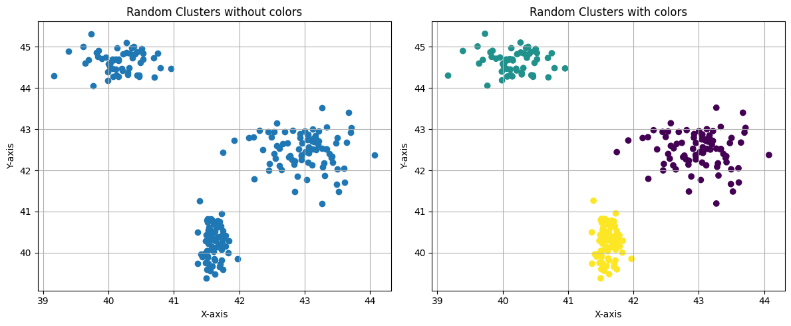
num_clusters = 8
mean_range = (1,15)
cov_range = (0,0.8)
max_points = 100data = []
labels = []
np.random.seed(42)
for cluster_id in range(num_clusters):
mean = np.random.uniform(mean_range[0], mean_range[1], size=2)
cov = np.diag(np.random.uniform(cov_range[0], cov_range[1], size=2))
n_points = int(np.random.uniform(int(max_points / 2), max_points))
cluster_data = np.random.multivariate_normal(mean, cov, n_points)
data.append(cluster_data)
labels.extend([cluster_id] * n_points)
X = np.vstack(data)fig, axes = plt.subplots(1, 2, figsize=(12, 5))
axes[0].scatter(X[:, 0], X[:, 1])
axes[0].set_title("Random Clusters without colors")
axes[0].set_xlabel("X-axis")
axes[0].set_ylabel("Y-axis")
axes[0].grid(True)
scatter = axes[1].scatter(X[:, 0], X[:, 1], c=labels, cmap='viridis')
axes[1].set_title("Random Clusters with colors")
axes[1].set_xlabel("X-axis")
axes[1].set_ylabel("Y-axis")
axes[1].grid(True)
plt.tight_layout()
plt.show()
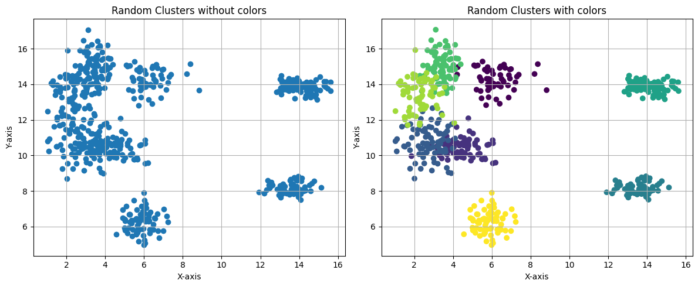
from sklearn.cluster import KMeans
from scipy.spatial import Voronoi, voronoi_plot_2ddef plot_voronoi(km, cluster_colors = None):
vor = Voronoi(km.cluster_centers_)
plt.figure(figsize=(12,12),dpi=150)
voronoi_plot_2d(vor, show_vertices=False, line_colors='orange', line_width=2, line_alpha=0.6, point_size=10)
# Plot data points
if not cluster_colors:
plt.scatter(X[:, 0], X[:, 1], c=km.labels_, cmap='tab10', s=20, label='Data points')
else:
for i in range(optimal_k):
cluster_points = X[labels == i]
plt.scatter(cluster_points[:, 0], cluster_points[:, 1], c=[cluster_colors[i]], s=20, label=f"Cluster {i+1}")
# Plot cluster centers
plt.scatter(km.cluster_centers_[:, 0], km.cluster_centers_[:, 1], c='red', marker='X', s=100, label='Cluster centers')
# Add labels and legend
plt.title("Voronoi Tessellation with KMeans Clusters")
plt.xlabel("X-axis")
plt.ylabel("Y-axis")
plt.xlim(0, 16)
plt.ylim(4, 18)
plt.legend()
plt.grid(True)
plt.tight_layout()
plt.show()Cuando la K es muy pequeña, clusters claramente separados tienden a unirse
km_1_4 = KMeans(n_clusters=4, n_init = 1, max_iter = 10,
init = 'random', random_state=42).fit(X)plot_voronoi(km_1_4)<Figure size 1800x1800 with 0 Axes>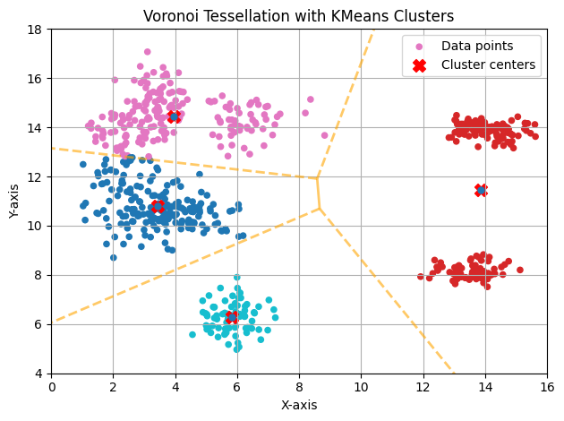
Cuando la K es muy grande, clusters claramente delimitados se dividen en varios
km_1_12 = KMeans(n_clusters=12, n_init = 1, max_iter = 10,
init = 'random', random_state=42).fit(X)plot_voronoi(km_1_12)<Figure size 1800x1800 with 0 Axes>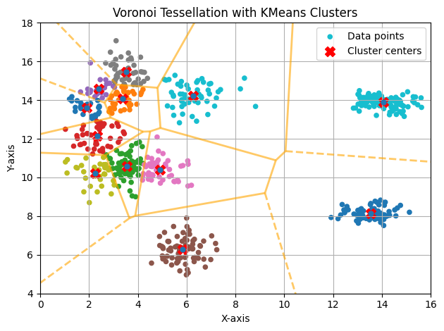
km_1_6 = KMeans(n_clusters=6, n_init = 1, max_iter = 10,
init = 'random', random_state=42).fit(X)Podemos ver que al hacer solo una iteración el resultado no es muy bueno ya que es facil ver que el cluster pintado de color verde son realmente dos clusters. Como la función que optimiza k-means es no convexa tiene varios mínimos locales. Este es uno de ellos. Para poder encontrar el máximo local deberiamos ejecutar muchas veces el algoritmo con difenrentes inicializaciones.
plot_voronoi(km_1_6)<Figure size 1800x1800 with 0 Axes>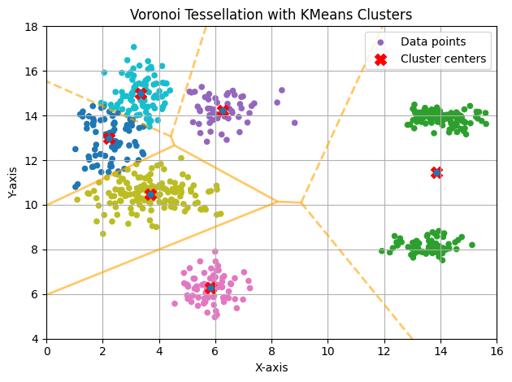
Esto tiene mucho mas sentido, para alguien que desconoce el origen de los datos, estos grupos parecen correctos.
km_100_6 = KMeans(n_clusters=6, n_init = 100, max_iter = 10,
init = 'random', random_state=42).fit(X)plot_voronoi(km_100_6)<Figure size 1800x1800 with 0 Axes>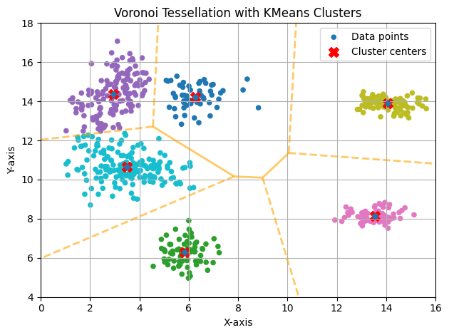
wss = np.zeros(8)
for k in range(8):
kmeans = KMeans(n_clusters=k+1, n_init = 20, max_iter=10,
init = 'random', random_state=42).fit(X)
wss[k] = kmeans.inertia_
plt.scatter(np.arange(8)+1, wss)
plt.plot(np.arange(8) + 1, wss, linestyle='-', color='orange', label='Connecting line')
plt.title("Total within clusters sum of squares")
plt.show()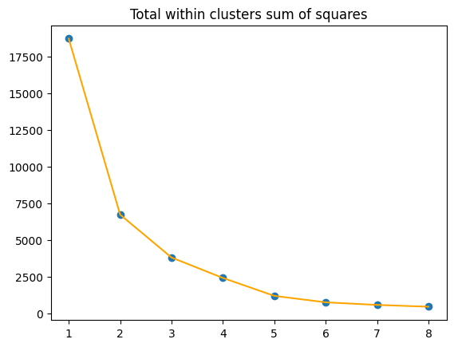
from sklearn.metrics import silhouette_score, silhouette_samples
asw = np.zeros(9)
for k in range(1,10):
kmeans = KMeans(n_clusters=k+1, n_init = 20, max_iter=10,
init = 'random', random_state=2).fit(X)
asw[k-1] = silhouette_score(X, kmeans.labels_)
plt.clf()
plt.scatter(np.arange(1,10)+1, asw)
plt.plot(np.arange(9)+2, asw, linestyle='-', color='orange', label='Connecting line')
plt.title("Average Silhouette Width")
plt.show()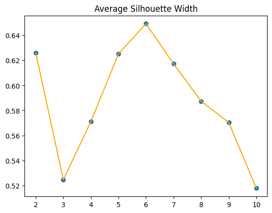
from matplotlib import colormapsoptimal_k = 6
cmap = plt.get_cmap("tab10")
cluster_colors = [cmap(i % 10) for i in range(optimal_k)] # Lista de colores
kmeans = km_100_6
labels = kmeans.labels_
# Calcular valores de silueta para cada punto
silhouette_vals = silhouette_samples(X, labels)
cmap = colormaps["tab10"]
# Crear Silhouette Plot
y_lower = 0
plt.figure(figsize=(12, 8))
for i in range(optimal_k):
# Filtrar valores de silueta por cluster
cluster_silhouette_vals = silhouette_vals[labels == i]
cluster_silhouette_vals.sort()
y_upper = y_lower + len(cluster_silhouette_vals)
# Dibujar barras horizontales
plt.barh(range(y_lower, y_upper), cluster_silhouette_vals, edgecolor='none', color=cluster_colors[i], height=1, label=f'Cluster {i+1}')
y_lower = y_upper
# Línea de referencia para la media del coeficiente de silueta
avg_silhouette = np.mean(silhouette_vals)
plt.axvline(avg_silhouette, color="red", linestyle="--", label=f'Avg Silhouette: {avg_silhouette:.2f}')
# Configuración del gráfico
plt.title("Silhouette Plot for Optimal Clustering", fontsize=14)
plt.xlabel("Silhouette Coefficient Values", fontsize=12)
plt.ylabel("Clustered Data Points", fontsize=12)
plt.yticks([]) # Ocultar ticks del eje Y
plt.legend(loc='best')
plt.grid(False)
plt.show()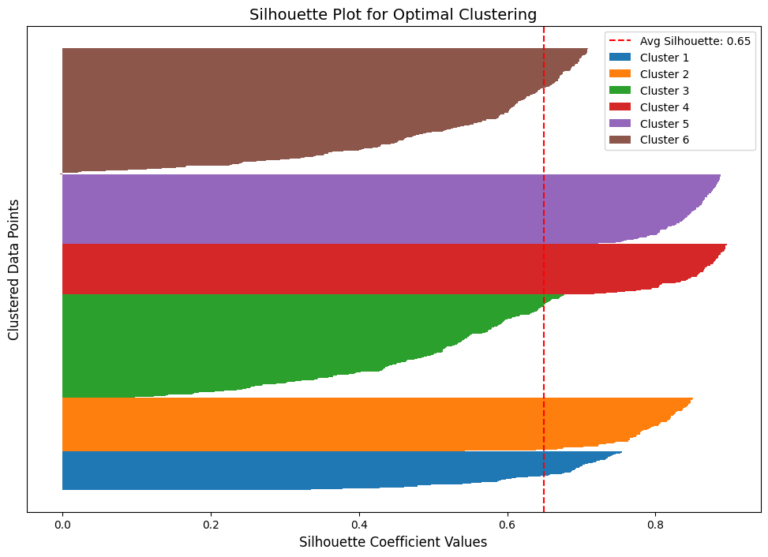
plot_voronoi(km_100_6,cluster_colors)<Figure size 1800x1800 with 0 Axes>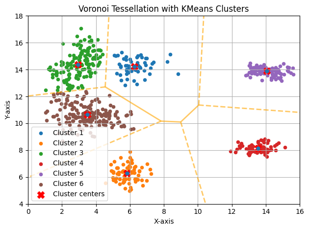
import imageio.v2 as imageioimage = imageio.imread('./img/f1_max.jpg')
plt.imshow(image)
plt.title("Original Image")
plt.axis('off')
plt.show()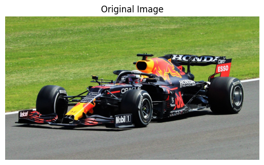
pixels = image.reshape(-1, 3)print(pixels[:5])[[131 150 60]
[128 147 57]
[132 153 62]
[134 155 64]
[126 149 58]]
km_image = KMeans(n_clusters=4, n_init = 100, max_iter = 10,
init = 'random', random_state=42).fit(pixels)np.unique(km_image.labels_)array([0, 1, 2, 3])km_image.cluster_centers_array([[232.75308354, 217.50503367, 185.43409561],
[ 19.68062165, 19.23438335, 23.22971993],
[144.20697832, 143.57738791, 139.43506076],
[131.94682067, 157.0236822 , 64.49779331]])compressed_pixels = np.array([km_image.cluster_centers_[label] for label in km_image.labels_])
compressed_pixels = compressed_pixels.reshape(image.shape).astype('uint8')plt.imshow(compressed_pixels)
plt.grid(False)
plt.title("Reduced Image")
plt.axis('off')
plt.show()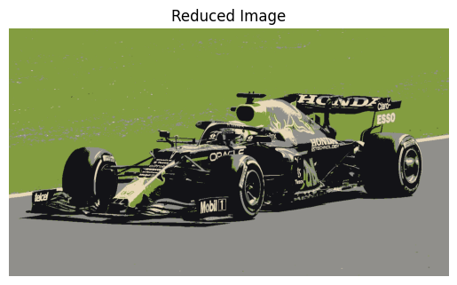
n_colors = [2, 4, 6, 8, 16, 32]
fig, axes = plt.subplots(2, 3, figsize=(12, 8))
axes = axes.ravel()
for i, n in enumerate(n_colors):
km_image = KMeans(n_clusters=n, n_init=10, max_iter=300, random_state=42).fit(pixels)
compressed_pixels = np.array([km_image.cluster_centers_[label] for label in km_image.labels_])
compressed_pixels = compressed_pixels.reshape(image.shape).astype('uint8')
axes[i].imshow(compressed_pixels)
axes[i].axis('off') # Ocultar ejes
axes[i].set_title(f"{n} Colors", fontsize=14)
# Ajustar diseño
plt.tight_layout()
plt.suptitle("KMeans Compressed Images with Different Colors", fontsize=16, y=1.02)
plt.show()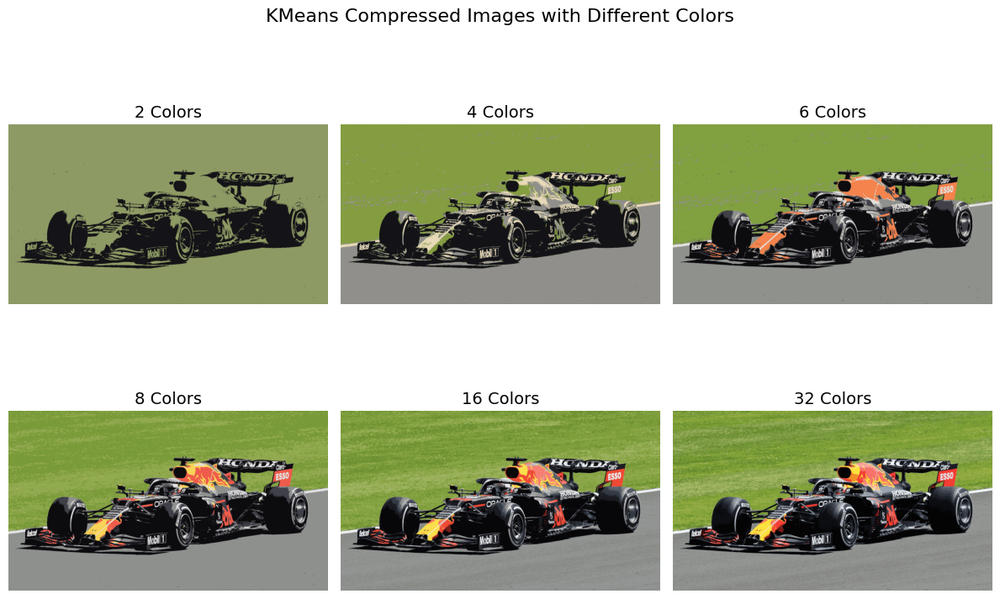